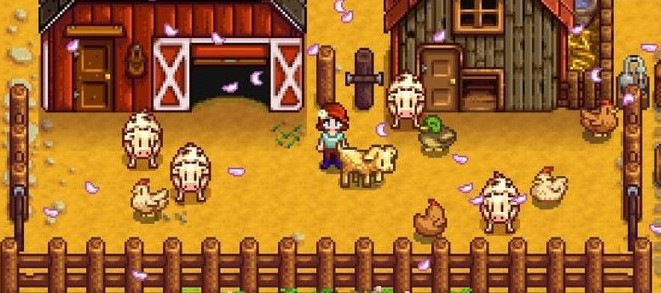

Animais da Fazenda

Descubra fatos incríveis sobre os animais da Fazenda Encanto, e entenda porque as crianças se envolvem tanto quando tem
uma experiencia de turismo rural:
- As galinhas contam com a capacidade de se lembrar clara e detalhadamente de até 100 rostos, não apenas de outros da
sua mesma espécie, mas também de seres humanos.
Além disso, este belo animal conta com a peculiaridade de saber usar mais de 200 sons para se comunicar, os quais são de
muita ajuda com seus pintinhos, já que antes de que eles rompam a sua casca, sua mamãe irá cacarejar e eles responderão
piando.
- As vacas são extraordinárias. Este belo animal tem a capacidade de construir relações de amizade com outros de sua
mesma espécie, e por isso é comum vê-las na fazenda com um grupo reduzido de companheiras.
Além disso, assim como ocorre com os cães, este ser conta com uma memória impressionante que o faz aprender seu nome e
responder a este.
- As porcas mães cantam a seus porquinhos enquanto os amamentam.
Os porcos, quando dormem, gostam de estar juntos e ficar numa posição nariz com nariz. Contam com um incrível senso de
orientação, o qual os faz encontrar facilmente o caminho de casa, mesmo que estejam a longas distâncias da mesma.
- Os cavalos tem a capacidade de aprender e memorizar palavras humanas e podem ouvir a voz humana melhor do que os cães,
devido à sua peculiar capacidade de audição. E muito mais...